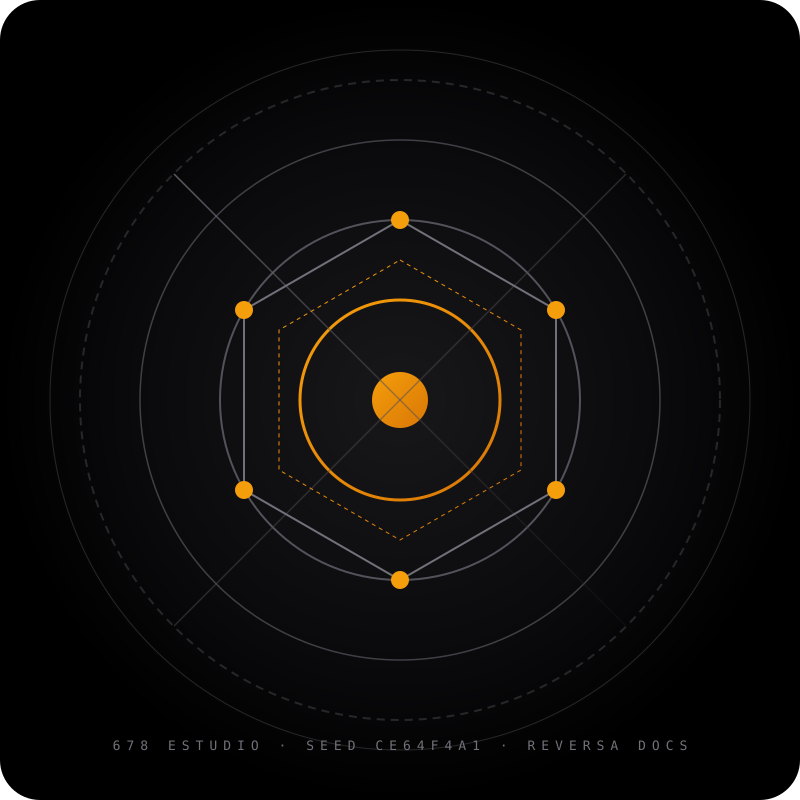

ENGENHARIA REVERSA SDD · 678 ESTUDIO
Documentação Interativa do Sistema
Mini-site autocontido gerado a partir do acervo de especificações do 678 Estudio. Explore a arquitetura espacial, o mapa de dependências, os modelos relacionais e as regras de negócio de cada módulo.

SEED: CE64F4A1 (REPRODUTÍVEL)
Confiança Geral
90.6%
Módulos Auditados
7
Volume de Código
3.840 LOC
Stack Principal
Astro 4.16 Hybrid
Especificações Detalhadas por Módulo
Catálogo de Produtos & Categorias
96.4%
Operações CRUD parametrizadas, ordenação comercial de produtos e filtros de vitrine pública.
Banco de Dados SQLite & Migrações
95.8%
Driver @libsql/client singleton, bootstrap protegido por WeakMap e migrações versionadas.
Personalizador 3D de Canecas
95.5%
Renderizador WebGL Three.js com rotação 360°, projeção angular e integração com WhatsApp.
Personalizador de Quadros em Ambientes
95.0%
Composição em 5 camadas em cenários de Sala e Escritório com escala de 15 px/cm.
Compilador de Agendas (Typst)
84.6%
Diagramação automatizada em PDF vetorial, cálculo de contraste WCAG e prévias em PNG.
Painel Administrativo
77.8%
Gestão de catálogo em tempo real, configurações de contato com DDI +55 e rotinas de backup.
Site Público & Vitrine Editorial
83.3%
Hero institucional, 4 carrosséis horizontais com snap suave e design responsivo.
Glossário & Conceitos
8 Termos
Definições conceituais de domínio com busca instantânea em tempo real no cliente.